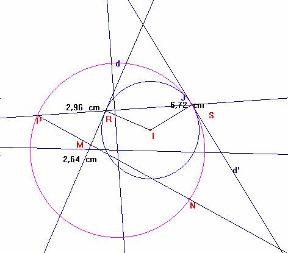

Sortais Y, R. (1997): La géométrie du triangle. Hermann, editeurs des ciences et des arts ( Pág. 188)
Teorema de Feuerbach. Puntos de Feuerbach.
1ª parte Preliminar
Sea J una circunferencia de centro I y radio r.
Sea P un punto que no es de J.
Sea d una recta tangente a J que no contiene a P.
Sea PJ (P) la potencia de P respecto a J. Es: PJ (P)= IP 2- r 2
A todo punto M de d se le asocia el punto N de la recta PM tal que PM * PN= PJ (P).
Demostrar que cuando M describe d, N describe la circunferencia T, que contiene a P y es tangente a J.
Nociones utilizadas:
Concircularidad de cuatro puntos
Ángulos orientados de rectas
Potencia de un punto respecto a una circunferencia.

Sea R el punto de contacto de d y J.
La recta PR cortará a J en otro punto S distinto de R, ya que P no es de d.
Supongamos que M sea de d y que no sea R.
Sea d’ la recta tangente a J en S. Las rectas d y d’ son simétricas en relación a la mediatriz de RS.
Se tiene pues, que (SR, d’) ≡ - (RS, d) (π)
Y (SP,d’) ≡ (RM,RS) (π) (1)
Por otra parte se tiene que: PJ (P)= PR * PS, y PJ (P) ≠ 0, porque P no es de J.
Como M ≠ R , entonces PM y PR son distintas, y por ello, N ≠ S
La condición PM*PN=PR*PS es equivalente a que los puntos M,N,R y S son concíclicos y diferentes de P, pues PJ (P) ≠ 0 (2)
Además, la condición (2) significa que (RM, RS) ≡ (NP, NS ) (π)
Por otra parte, utilizando (1), la condición PM*PN = PJ (P) equivale a
(SP, d’) ≡ (NP, NS ) (π) (3)
De donde el conjunto de puntos N distintos de P y de S que verifican 3, es la circunferencia T que contiene a P y S, tangente a d’.
Supongamos que M es de d y M=R, entonces la relación PM*PN=PR*PS equivale a PN=PS, o sea, N=S.
Así, concluimos: Cuando M describe d, N describe T, tangente a J en S. La recta d’ es tangente común en S a J y T.